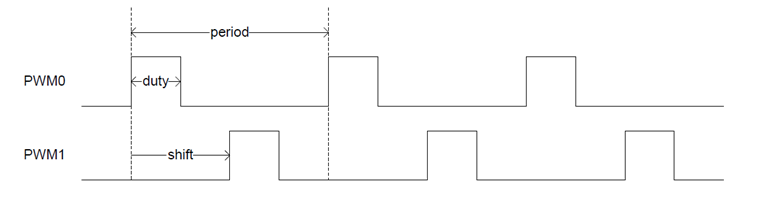
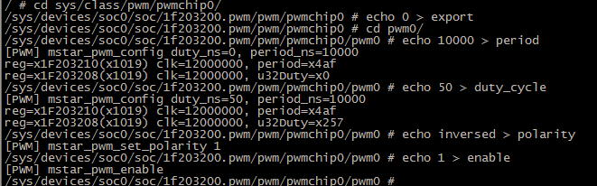
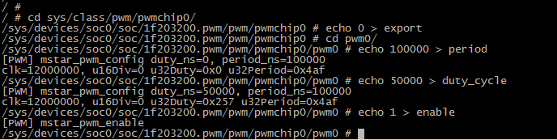
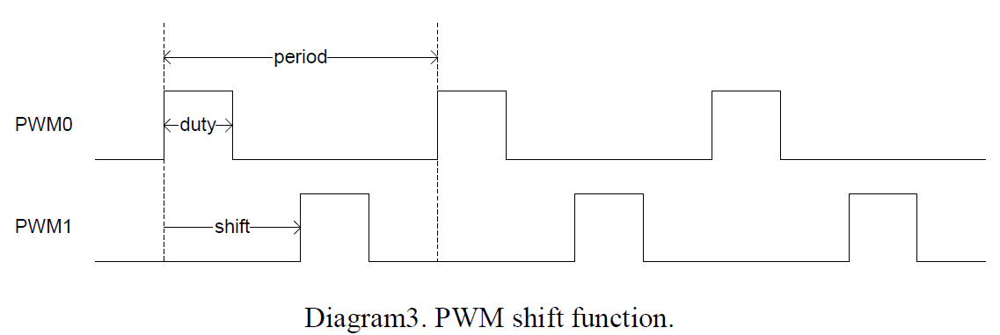
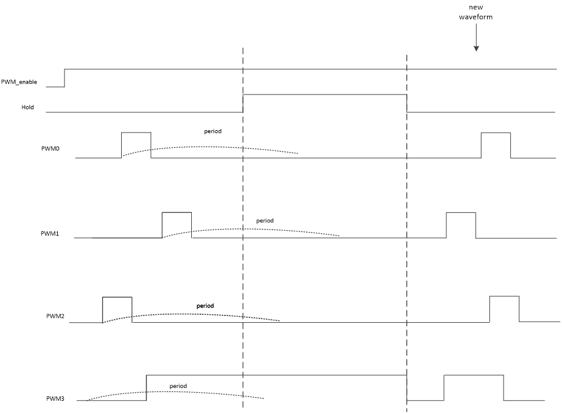
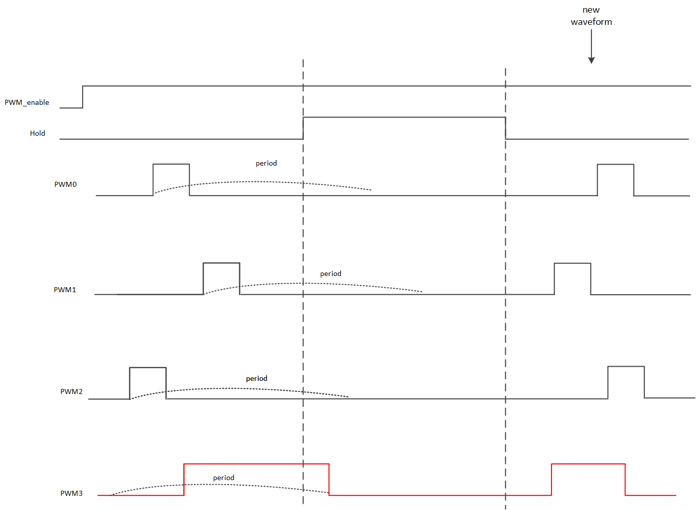
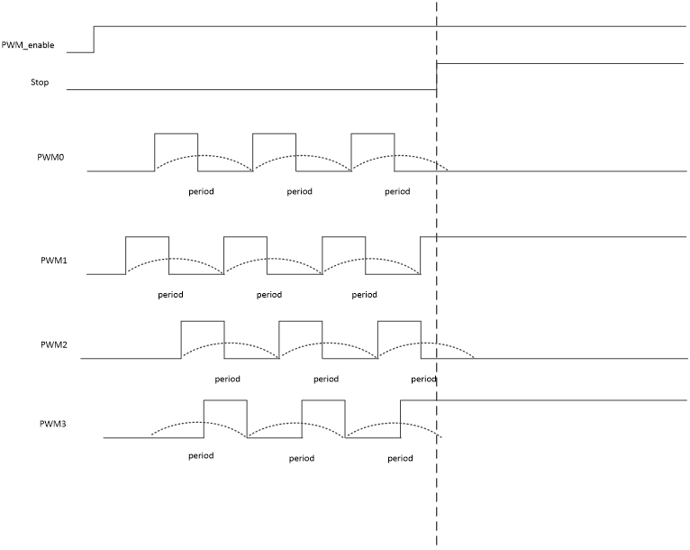
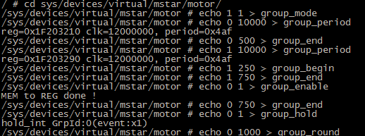
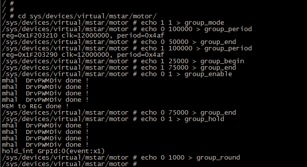

PWM使用参考
1. 概述¶
1.1. 概述¶
PWM(Pulse Width Modulation)模块通过改变占空比来改变输出的电流、电压进而控制电机转速、液晶屏调光等。
1.2. 说明¶
目前PWM支持的period范围：
pwm driver的period精度支持2档调节，普通模式精度范围为44Hz – 6MHz；设置更高的精度时在menuconfig中打开CONFIG_PWM_NEW选项，此时精度范围为0.000698Hz – 6MHz。
1.3. 频率和占空比¶
-
频率（period）
每秒钟信号从高电平到低电平再回到高电平的次数。
-
占空比（duty）
高电平持续时间和低电平持续时间之间的比例。

2. 驱动配置¶
2.1. DTSI配置¶
PWM在dtsi中的节点如下所示：
PWM在dtsi中的节点如下所示：
1. pwm {
2. compatible = "sstar,infinity-pwm";
3. reg = <0x0 0x1F203200 0x0 0x400>;
4. npwm = <11>;
5. clocks = <&CLK_pwm>;
6. interrputs = <GIC_SPI INT_IRQ_PWM IRQ_TYPE_EDGE_RISING>;
7. status = "ok";
8. };
2.2. 节点属性¶
PWM驱动支持的属性如下：
| 属性 | 描述 | 备注 |
|---|---|---|
| compatible | 用于匹配驱动进行驱动注册，需与代码中一致 | 禁止修改 |
| reg | 用于指定PWM寄存器bank的地址 | 不需要修改 |
| interrupts | 用于指定使用的硬件中断号及属性 | 不需要更改 |
| clocks | 用于指定使用的时钟源 | 不需要更改 |
| npwm | 用于指定PWM Channel的数量 | 不需要修改 |
| status | 用于选择是否使能PWM驱动 | 可根据需要修改 |
2.3. KERNEL CONFIG¶
编译Kernel时：make menuconfig
Device Drivers-->
[*] SStar SoC platform drivers-->
[*] Sstar PWM
[*] Support NEW PWM configuration
Support NEW PWM configuration:
开启该选项可以提高PWM设置的精度和范围，可以根据情况选择是否打开。不打开时PWM可以设置的范围为44Hz – 6MHz，打开时可以设置的范围为0.000698Hz – 6MHz。
2.4. PADMUX配置注意事项¶
在padmux.dtsi中配置mode格式如下图的，"<>"中第一个值为PAD值，第二个值为要设置的mode，第三个值为PAD在该mode下对应的功能。
如下配置1完成后，请检查2和3，是否有其他的PAD也设置成了需要设置的mode，重复设置会引起冲突导致配置padmux失效，如果冲突的mode不需要使用则可以将其注释掉，如果需要使用，请重新选择mode。
1. <PAD_PWM0 PINMUX_FOR_PWM0_MODE_1 MDRV_PUSE_PWM0>， 2. <PAD_PWM1 PINMUX_FOR_PWM1_MODE_1 MDRV_PUSE_PWM1>， <==1 3. 4. <PAD_FUART_RX PINMUX_FOR_PWM0_MODE_3 MDRV_PUSE_PWM0>, 5. <PAD_FUART_TX PINMUX_FOR_PWM1_MODE_3 MDRV_PUSE_PWM0>, <==2 6. 7. <PAD_PWM0 PINMUX_FOR_FUART_2W_MODE_4 MDRV_PUSE_FUART_RX>, 8. <PAD_PWM1 PINMUX_FOR_FUART_2W_MODE_4 MDRV_PUSE_FUART_TX>, <==3
2.5. PADMUX所有描述¶
1. //PWM0 2. <PAD_PWM0 PINMUX_FOR_PWM0_MODE_1 MDRV_PUSE_PWM0> 3. <PAD_GPIO14 PINMUX_FOR_PWM0_MODE_2 MDRV_PUSE_PWM0> 4. <PAD_FUART_RX PINMUX_FOR_PWM0_MODE_3 MDRV_PUSE_PWM0> 5. <PAD_GPIO0 PINMUX_FOR_PWM0_MODE_4 MDRV_PUSE_PWM0> 6. //PWM1 7. <PAD_PWM1 PINMUX_FOR_PWM1_MODE_1 MDRV_PUSE_PWM1> 8. <PAD_GPIO15 PINMUX_FOR_PWM1_MODE_2 MDRV_PUSE_PWM1> 9. <PAD_FUART_RX PINMUX_FOR_PWM1_MODE_3 MDRV_PUSE_PWM1> 10. <PAD_GPIO1 PINMUX_FOR_PWM1_MODE_4 MDRV_PUSE_PWM1> 11. //PWM2 12. <PAD_I2C0_SCL PINMUX_FOR_PWM2_MODE_1 MDRV_PUSE_PWM2> 13. <PAD_FUART_CTS PINMUX_FOR_PWM2_MODE_2 MDRV_PUSE_PWM2> 14. <PAD_GPIO7 PINMUX_FOR_PWM2_MODE_3 MDRV_PUSE_PWM2> 15. <PAD_GPIO2 PINMUX_FOR_PWM2_MODE_4 MDRV_PUSE_PWM2> 16. //PWM3 17. <PAD_I2C0_SDA PINMUX_FOR_PWM3_MODE_1 MDRV_PUSE_PWM3> 18. <PAD_FUART_RTS PINMUX_FOR_PWM3_MODE_2 MDRV_PUSE_PWM3> 19. <PAD_GPIO8 PINMUX_FOR_PWM3_MODE_3 MDRV_PUSE_PWM3> 20. <PAD_GPIO3 PINMUX_FOR_PWM3_MODE_4 MDRV_PUSE_PWM3> 21. //PWM4 22. <PAD_PM_GPIO0 PINMUX_FOR_PWM4_MODE_1 MDRV_PUSE_PWM4> 23. <PAD_SPI0_CZ PINMUX_FOR_PWM4_MODE_2 MDRV_PUSE_PWM4> 24. <PAD_GPIO4 PINMUX_FOR_PWM4_MODE_3 MDRV_PUSE_PWM4> 25. //PWM5 26. <PAD_PM_GPIO1 PINMUX_FOR_PWM5_MODE_1 MDRV_PUSE_PWM5> 27. <PAD_SPI0_CK PINMUX_FOR_PWM5_MODE_2 MDRV_PUSE_PWM5> 28. <PAD_GPIO5 PINMUX_FOR_PWM5_MODE_3 MDRV_PUSE_PWM5> 29. //PWM6 30. <PAD_PM_GPIO2 PINMUX_FOR_PWM6_MODE_1 MDRV_PUSE_PWM6> 31. <PAD_SPI0_DI PINMUX_FOR_PWM6_MODE_2 MDRV_PUSE_PWM6> 32. <PAD_GPIO6 PINMUX_FOR_PWM6_MODE_3 MDRV_PUSE_PWM6> 33. //PWM7 34. <PAD_PM_GPIO3 PINMUX_FOR_PWM7_MODE_1 MDRV_PUSE_PWM7> 35. <PAD_SPI0_DO PINMUX_FOR_PWM7_MODE_2 MDRV_PUSE_PWM7> 36. <PAD_GPIO7 PINMUX_FOR_PWM7_MODE_3 MDRV_PUSE_PWM7> 37. //PWM8 38. <PAD_GPIO0 PINMUX_FOR_PWM8_MODE_1 MDRV_PUSE_PWM8> 39. <PAD_GPIO2 PINMUX_FOR_PWM8_MODE_2 MDRV_PUSE_PWM8> 40. <PAD_SR_IO14 PINMUX_FOR_PWM8_MODE_3 MDRV_PUSE_PWM8> 41. //PWM9 42. <PAD_GPIO1 PINMUX_FOR_PWM9_MODE_1 MDRV_PUSE_PWM9> 43. <PAD_PWM0 PINMUX_FOR_PWM9_MODE_2 MDRV_PUSE_PWM9> 44. <PAD_GPIO14 PINMUX_FOR_PWM9_MODE_3 MDRV_PUSE_PWM9> 45. <PAD_SR_IO15 PINMUX_FOR_PWM9_MODE_4 MDRV_PUSE_PWM9> 46. //PWM10 47. <PAD_GPIO3 PINMUX_FOR_PWM10_MODE_1 MDRV_PUSE_PWM10> 48. <PAD_PWM1 PINMUX_FOR_PWM10_MODE_2 MDRV_PUSE_PWM10> 49. <PAD_GPIO15 PINMUX_FOR_PWM10_MODE_3 MDRV_PUSE_PWM10> 50. <PAD_SR_IO16 PINMUX_FOR_PWM10_MODE_4 MDRV_PUSE_PWM10>
3. 配置PWM输出（普通模式）¶
3.1. 普通精度设置¶
menuconfig中不开启PWM_NEW的情况下可以配置pwm周期与占空比的精度相对较低，建议开启PWM_NEW。这种模式下配置PWM的period的单位为Hz，duty的单位为百分比。
配置方法如下：
1. # 跳转到PWM控制目录 2. cd sys/class/pwm/pwmchip0/ 3. 4. # 创建PWM0节点 5. echo 0 > export 6. 7. # 进入PWM0控制目录 8. cd pwm0 9. 10. # 设置周期为10000Hz 11. echo 10000 > period 12. 13. # 设置占空比为50% 14. echo 50 > duty_cycle 15. 16. # 设置极性为反向（不设置反向为echo normal > polarity） 17. echo inversed > polarity 18. 19. # 使能PWM0 20. echo 1 > enable 21.

3.2. 高精度设置¶
在menuconfig中开启PWM_NEW选项时，PWM的period与duty_sycle配置的范围更大，精度也更高。配置方法与普通精度也不同，这种模式下配置PWM的period和duty_cycle使用纳秒为单位，所以要先计算周期和占空比的值。
要设置PWM0频率为10KHZ占空比为½，则：
period = 109 ÷ 10000 = 100000
duty cycle = ½ × 100000 = 50000
要设置PWM1频率为30HZ占空比为½，则：
period = 109 ÷ 30 = 33333333
duty cycle = ½ × 33333333 = 16666666
配置PWM：
1. # 跳转到PWM控制路径 2. cd sys/class/pwm/pwmchip0/ 3. 4. # 创建PWM0节点 使用PAD_GPIO0 5. echo 0 >export 6. 7. # 进入PWM0控制路径 8. cd pwm0 9. 10. # 配置周期 11. echo 100000 >period 12. 13. # 设置占空比 14. echo 50000 >duty_cycle 15. 16. # 使能PWM0 17. echo 1 >enable

4. GROUP相关概念¶
4.1. Group功能（Sync mode）¶
Group功能可以同时对多个PWM进行控制（一个group至多4个），要使用PWM的Group功能需要将PWM加入到Group中（每个PWM只能加入到固定的Group中：PWM0 - 3 >Group 0 ,PWM4 – 7>Group 1,PWM8 – 10==>Group 2），可通过以下命令将一个PWM加入到Group中：
echo PWM_ID enable > group_mode
之后对加入到Group的各个PWM进行配置再Enable，这时driver会将之前的配置一起下到寄存器中再Enable Group中的PWM，Group中的PWM会同时开始出配置的波形。
Group功能的典型应用是Sync mode（也叫马达模式），这个模式要求在同一个Group中的PWM的Period都相同，这样波形的周期就是同时开始同时结束，可以用来实现电机同步等功能。
4.2. period、begin、end¶
period是PWM的周期，开关PWM_NEW配置period的值单位不同，详见配置PWM输出（GROUP模式），配置方法如下：
echo PWM_ID period > group_period
begin设置的是PWM 的shift值，这个值可以将PWM的相位相对于其他的PWM有一个偏移，end设置的是PWM的duty值，group中的duty与普通模式下不同，group中PWM的占空比需要将duty减去shift即end – begin。

Group中配置begin与shift的方法如下：
1. echo PWM_ID end > group_end 2. echo PWM_ID begin > group_begin
4.3. Hold功能¶
Group的Hold功能可以让加入到Group中的PWM在完成Hold命令前的周期波形之后停止。
Hold命令如下：
echo GROUP_ID > group_hold
Group的Hold功能分为2种：Hold_mode_0 和 Hold_mode_1。
两者的区别为：Hold_mode_0在PWM停止以后会维持结束时电平；Hold_mode_1会PWM停止之后将电平全部拉低。
改变Hold的mode命令如下：
echo HOLD_mode > group_hold_mode1
在驱动中将Hold_mode_0作为Group出波形中更改PWM设置的方法，在Enable group之后配置需要更改的配置，再使用Hold_mode_0会将新配置导入到寄存器并出现新波形，这样不会影响到Group之间的PWM同步，具体操作方法见：配置PWM输出（GROUP模式）。


4.4. Round功能¶
Round功能可以让Group中的PWM出完指定的周期数之后停止并触发Round中断。Round命令如下：
echo GROUP_ID round > group_round
4.5. Stop功能¶
Stop功能可以让当前Group中的PWM立即停止（不会等当前周期完成），PWM会维持结束时的电平。Stop命令如下：
echo GROUP_ID enable > group_stop

5. 配置PWM输出（GROUP模式）¶
Group模式为了保持PWM之间的同步会将用户的配置先暂存，只有在Enable以及Hold中断触发时将用户的配置写到寄存器中才生效。
使用中需要Group在enable之后，更改PWM的period、begin、end的值时，先进行配置，再下Hold_mode_0使能命令来触发中断，将新的配置下到寄存器中来使其生效。
5.1. 普通精度设置¶
menuconfig中不开启PWM_NEW的情况下，配置pwm周期与占空比的精度相对较低，建议开启PWM_NEW。这种模式下配置PWM的period的单位为Hz，duty的单位为千分比。配置方法如下（注意：在同一个GROUP中的PWM的period要相同）：
1. # 进入马达模式控制目录 2. cd sys/devices/virtual/mstar/motor/ 3. 4. # 将PWM1加入到GROUP模式中 5. echo 1 1 > group_mode 6. 7. # 设置PWM0的period为10000HZ 8. echo 0 10000 > group_period 9. 10. # 设置PWM0的duty为500‰ 11. echo 0 500 > group_end 12. 13. # 设置PWM1的period为10000HZ 14. echo 1 10000 > group_period 15. 16. # 设置PWM1的shift为250‰ 17. echo 1 250 > group_begin 18. 19. # 设置PWM1的duty为750‰ 20. echo 1 750 > group_end 21. 22. # 启动Group0 23. echo 0 1 > group_enable 24. 25. # 更改PWM0的duty为750‰ 26. echo 0 750 > group_end 27. 28. # 触发Group0 Hold中断使Enable之后的配置生效 29. echo 0 1 > group_hold 30. 31. # 配置Group0输出1000个周期的 32. echo 0 1000 > group_round

5.2. 高精度设置¶
menuconfig中开启PWM_NEW时，PWM的period与duty_sycle配置的范围更大，精度也更高。配置方法与普通精度也不同，这种模式下配置PWM的period和duty_cycle使用纳秒为单位，所以要先计算周期和占空比的值。
要设置PWM0频率为10KHZ占空比为½，则：
period = 109 ÷10000 = 100000
duty cycle = ½ × 100000 = 50000
要设置PWM1频率为30HZ占空比为½，则：
period = 109 ÷30 = 33333333
duty cycle = ½ × 33333333 = 16666666
配置PWM：
1. # 进入马达模式控制目录 2. cd sys/devices/virtual/mstar/motor/ 3. 4. # 将PWM1加入到GROUP模式中 5. echo 1 1 > group_mode 6. 7. # 设置PWM0的period为10000HZ 8. echo 0 10000 > group_period 9. 10. # 设置PWM0的duty为500‰ 11. echo 0 500 > group_end 12. 13. # 设置PWM1的period为10000HZ 14. echo 1 10000 > group_period 15. 16. # 设置PWM1的shift为250‰ 17. echo 1 250 > group_begin 18. 19. # 设置PWM1的duty为750‰ 20. echo 1 750 > group_end 21. 22. # 启动Group0 23. echo 0 1 > group_enable 24. 25. # 更改PWM0的duty为750‰ 26. echo 0 750 > group_end 27. 28. # 触发Group0 Hold中断使Enable之后的配置生效 29. echo 0 1 > group_hold 30. 31. # 配置Group0输出1000个周期的 32. echo 0 1000 > group_round
